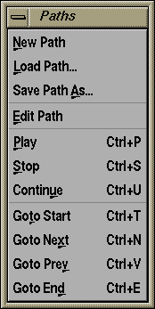
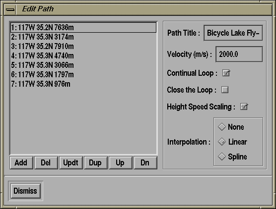

The Path menu provides access to all of TerraVision's flight path capabilities. This lets you record a certain flight path through the terrain and play this back. You can save flight paths for use at a later date.

#PATH V1.0 $interpolate = linear $name = Irwin Test Flight $update_rate = 30 $speed = 2000 $loop = yes $gcc = yes x=-4444.57 z=-1746.71 y=7634.46 yaw=0.4732 pitch=2.134 roll=0 x=1802.74 z=942.15 y=3173.27 yaw=0.4569 pitch=2.177 x=8908.53 z=-3449.30 y=7902.57 yaw=2.0751 pitch=2.333 x=11967.45 z=1492.28 y=4728.7 yaw=2.8615 pitch=2.115 x=12322.39 z=9028.90 y=3047.98 yaw=3.7999 pitch=1.835 x=8871.02 z=6391.788 y=1787.71 yaw=3.7885 pitch=1.821 x=5230.81 z=3640.53 y=973.24 yaw=3.7905 pitch=1.745

A flight path is essentially composed of a number of viewpoints that TerraVision flies between. You can create a flight path interactively by just pressing "Add" at each successive viewpoint you want to add to the flight path. Once you have added a few viewpoints, then you can see what your flight path looks like by selecting the "Path/Play" option.
The other buttons next to "Add" include, "Del" which lets you remove a viewpoint from the list of viewpoints, "Updt" which updates the currently selected entry in the path with the current camera position, "Dup" which creates a duplicate of the selected path entry, and "Up" and "Dn" which let you bubble viewpoints up and down the list.
Other flight path features that you can control include the velocity, whether the flight path will continually loop, whether TerraVision will automatically close the loop from the last viewpoint to the first one, and also whether you want to do linear or spline (or no) interpolation for the flight path.